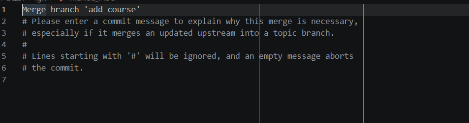

學號：112111136張紘齊 (學號和姓名都要寫)
姓名：張紘齊
Ans:
我是目前就讀資訊管理系三年A班的學生。 我對資訊科技與數據應用充滿熱情，在學期間除了修習專業的系統開發與管理課程外，也積極投入實務專案，累積了網頁開發與數據視覺化的經驗。 在課餘時間，我最大的興趣是玩電腦遊戲，尤其是非常考驗專注力、團隊線上合作與即時策略反應的射擊遊戲。對我來說，遊戲不僅是放鬆排解壓力的管道，更讓我學會如何在面對高壓、瞬息萬變的環境中，與隊友保持高效溝通並做出精準決策。 我是一個樂於接受挑戰、踏實且有責任感的人。期待未來能將資管的專業知識與個人的分析能力相結合，在未來的學習與職場上持續成長，創造更多價值！
為了確保本學期各科成績能穩定保持在 60 分以上，我給自己制定了系統性的預習與複復習計畫。首先在每週上課前，我會花 15 至 30 分鐘投影片，掌握當週的專有名詞與核心概念。上課時，針對不理解的邏輯或程式碼進行標記。課後的三天內，我一定會安排至少 2 小時進行實作複習，特別是程式設計與資料庫相關科目，透過動手重寫範例來加深記憶。期中與期末考前兩週，我會整理出個人筆記並與同學討論，提早完成期末專案進度，避免因時間壓縮而影響繳交品質。
企業營運與銷售資料 (ERP/CRM) 位置： 地端 SQL Server、Oracle，或雲端 Salesforce、Dynamics 365。 說明： 包含客戶訂單、營收、庫存與歷史銷售紀錄。透過 Power BI 能快速建立銷售業績儀表板，追蹤 KPI 與營收成長趨勢。 數位行銷與網站流量 (Web Analytics) 位置： Google Analytics (GA4)、Adobe Analytics 或社群平台 API。 說明： 涵蓋網站點擊流、使用者輪廓、廣告投放轉換率。協助行銷團隊評估 ROI 並優化投放策略。 財務與人事報表 (Finance & HR) 位置： 企業內部的 Excel 活頁簿、SharePoint 清單或 SAP 系統。 說明： 包含預算執行率、損益表、員工離職率與出勤統計。將繁雜的表格視覺化，方便管理階層一目了然。 物聯網與生產線數據 (IoT & Manufacturing) 位置： Azure Azure SQL、Azure Data Lake 或 MQTT 串流。 說明： 生產線機台的溫度、壓力與產出速度。可用於即時監控設備健康度與進行預測性維護。
